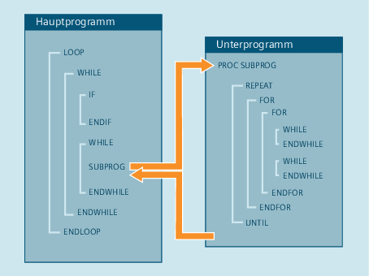

Die Steuerung arbeitet die NC-Sätze standardmäßig in der programmierten Reihenfolge ab.
Diese Reihenfolge kann durch die Programmierung von alternativen Programmblöcken und Programmschleifen variiert werden. Die Programmierung dieser Kontrollstrukturen erfolgt mit den Schlüsselwörtern IF, ELSE, ENDIF, LOOP, FOR, WHILE und REPEAT.
| Achtung |
ProgrammierfehlerKontrollstrukturen sind nur innerhalb des Anweisungsteils eines Programms möglich. Definitionen im Programmkopf können nicht bedingt oder wiederholt ausgeführt werden. Schlüsselworte für Kontrollstrukturen dürfen ebenso wie Sprungziele nicht mit Makros überlagert werden. Eine Abprüfung bei der Makrodefinition findet nicht statt. |
Eine Kontrollstruktur kann nicht programmübergreifend verwendet werden.
Innerhalb jeder Unterprogrammebene ist eine Schachtelungstiefe von bis zu 16 Kontrollstrukturen möglich.
Im standardmäßig aktiven Interpreterbetrieb kann durch Verwendung von Programmsprüngen ein schnellerer Programmablauf als mit Kontrollstrukturen erreicht werden.
In vorkompilierten Zyklen ist kein Unterschied zwischen Programmsprüngen und Kontrollstrukturen vorhanden.
Werden innerhalb einer Programmschleife nur Vorlaufsätze ausgeführt, wird in der aktuellen Satzanzeige der letzte Hauptlaufsatz vor der Programmschleife angezeigt.
Damit z. B. zu Diagnosezwecken auch die abgearbeiteten Vorlaufsätze in der aktuellen Satzanzeige sichtbar werden, muss der Decodier-Einzelsatz SBL2 aktiviert werden.
Wird innerhalb einer Programmschleife kein Hauptlaufsatz programmiert, wird die Schleife so lange im Vorlauf bearbeitet, bis die Schleifenbedingung erfüllt ist.
Dadurch entsteht eine hohe Auslastung und die Anzeige kann beeinträchtigt werden.
Als Abhilfe bietet sich an, den Befehl STOPRE oder eine Verweilzeit G04 von 0 Sekunden in die Schleife einzufügen.
Sätze mit Kontrollstrukturelementen können nicht ausgeblendet werden.
Sprungmarken (Labels) sind in Sätzen mit Kontrollstrukturelementen nicht erlaubt.
| Hinweis |
Grundsätzlich empfiehlt sich, Kontrollstrukturen und Programmsprünge nicht gemischt zu verwenden. |
Bei externen Programmen mit Kontrollstrukturen muss der Schleifenanfang innerhalb des Nachladespeichers liegen. Andernfalls wird das Sprungziel nicht gefunden und es kommt zum Programmabbruch und zur Ausgabe von Alarm 14000.
| Hinweis |
Um externe Programme ohne Einschränkungen hinsichtlich Kontrollstrukturen abarbeiten zu können, wird empfohlen, statt der Funktion "Abarbeiten von Extern" die Funktion "Abarbeiten vom externen Speicher (EES)" zu verwenden. |
Kontrollstrukturen werden interpretativ abgearbeitet. Bei Erkennen eines Schleifenendes wird unter Berücksichtigung der dabei gefundenen Kontrollstrukturen nach dem Schleifenanfang gesucht. Daher wird im Interpreterbetrieb die Blockstruktur eines Programms nicht komplett geprüft.
Bei Vorverarbeitung von Zyklen kann die korrekte Schachtelung von Kontrollstrukturen überprüft werden.
Siehe auch:
Bedingte Anweisung und Verzweigung (IF, ELSE, ENDIF)
Endlos-Programmschleife (LOOP, ENDLOOP)
Zählschleife (FOR ... TO ..., ENDFOR)
Programmschleife mit Bedingung am Schleifenanfang (WHILE, ENDWHILE)
Programmschleife mit Bedingung am Schleifenende (REPEAT, UNTIL)
Programmbeispiel mit verschachtelten Kontrollstrukturen